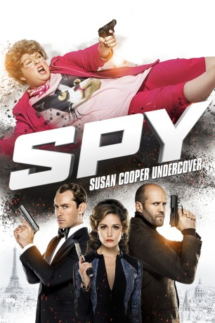

gesehen am 27.07.2015
gesehen am 27.07.2015Alternativ: Spy gesehen am 27.07.2015
 
 IMDB-Wertung: 7.0 / 10
IMDB-Wertung: 7.0 / 10  Metascore:
Metascore: 
Susan Cooper (Melissa McCarthy) ist eine bescheidene CIA-Analystin, die ausschließlich am Schreibtisch arbeitet. Auch wenn sie damit für die eigentliche Planung der gefährlichen Missionen des Geheimdienstes verantwortlich ist, sind es die Agenten im Feldeinsatz, die anschließend die Lorbeeren für einen erfolgreich abgeschlossenen Job ernten und Susan bleibt weitgehend unbeachtet. Doch als ihr Partner Bradley Fine (Jude Law) den Machenschaften der schönen Raina Boyanov (Rose Byrne) und ihren Strippenziehern im Hintergrund zum Opfer fällt, meldet sich Susan kurzerhand freiwillig für einen heiklen Undercover-Einsatz. Bei diesem soll sie die Organisation eines gefährlichen Waffenhändlers infiltrieren und gleichzeitig wird ihr so die Möglichkeit geboten, Vergeltung für ihren Partner zu üben. In zum Teil unglamourösen Tarnungen, etwa als Katzenliebhaberin aus Iowa, erlebt Susan das Abenteuer ihres Lebens, bei dem sie zur Heldin der gefährlichsten Mission des CIA wird.
Jahr: 2015
Dauer: 119 Minuten
FSK: 12
Land: USA Studio: 20th Century FoxTonspuren:
Untertitel: Deutsch, Englisch,
Auflösung: 1080p (1920x808) Größe: 7700 MB
Regisseur: Paul Feig
Drehbuch: Paul Feig
Soundtrack: Theodore Shapiro
Darsteller:
 Jude Law als Bradley Fine
Jude Law als Bradley Fine Raad Rawi als Tihomir Boyanov
Raad Rawi als Tihomir Boyanov Melissa McCarthy als Susan Cooper
Melissa McCarthy als Susan Cooper Jessica Chaffin als Sharon
Jessica Chaffin als Sharon Sam Richardson als John
Sam Richardson als John Allison Janney als Elaine Crocker
Allison Janney als Elaine Crocker Rose Byrne als Rayna Boyanov
Rose Byrne als Rayna Boyanov Richard Brake als Solsa Dudaev
Richard Brake als Solsa Dudaev Steve Bannos als Alan the Bartender
Steve Bannos als Alan the Bartender Morena Baccarin als Karen Walker
Morena Baccarin als Karen Walker Jason Statham als Rick Ford
Jason Statham als Rick Ford Carlos Ponce als Matthew Wright
Carlos Ponce als Matthew Wright Will Yun Lee als Timothy Cress
Will Yun Lee als Timothy Cress Bobby Cannavale als Sergio De Luca
Bobby Cannavale als Sergio De Luca Michael McDonald als Patrick
Michael McDonald als Patrick Adam Ray als Agent in Jetpack
Adam Ray als Agent in Jetpack Peter Serafinowicz als Aldo
Peter Serafinowicz als Aldo Jamie Denbo als Casino Hostess
Jamie Denbo als Casino Hostess Peter Linka als Casino Bartender
Peter Linka als Casino Bartender Zach Woods als Man in Purple Tie
Zach Woods als Man in Purple Tie Sergej Onopko als Hristo
Sergej Onopko als Hristo Mitch Silpa als Colin / Frederick!
Mitch Silpa als Colin / Frederick! Matt Devere als Pilot
Matt Devere als Pilot Ben Falcone als American Tourist
Ben Falcone als American Tourist 50 Cent als Curtis '50 Cent' Jackson
50 Cent als Curtis '50 Cent' Jackson Paul Feig als Drunken Guest at Paris Hotel , uncredited
Paul Feig als Drunken Guest at Paris Hotel , uncredited Bari Suzuki als Male Model , uncredited
Bari Suzuki als Male Model , uncredited Alicia Vela-Bailey als Woman from Paris , uncredited Attila Árpa als Italian Guy #1
Alicia Vela-Bailey als Woman from Paris , uncredited Attila Árpa als Italian Guy #1Datei: X:\2015(N-Z)\Spy Susan Cooper Undercover (2015, FSK12, 1920x808).mkv seit 06.07.2015
Festplatte: HD 2015(A-Z)
 Es gibt insgesamt 161 Filme in der Gruppe '2015(N-Z)'
Es gibt insgesamt 161 Filme in der Gruppe '2015(N-Z)'